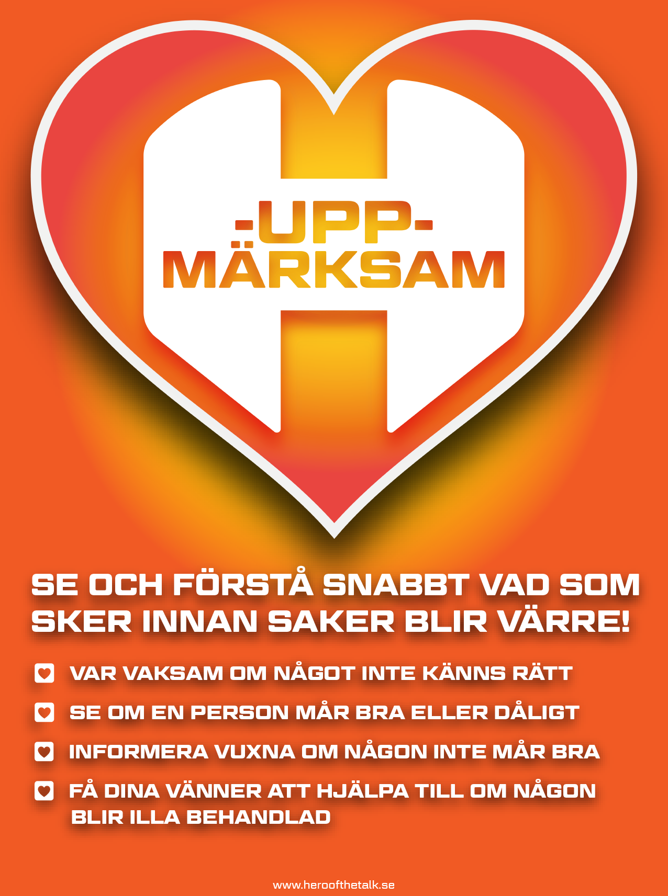
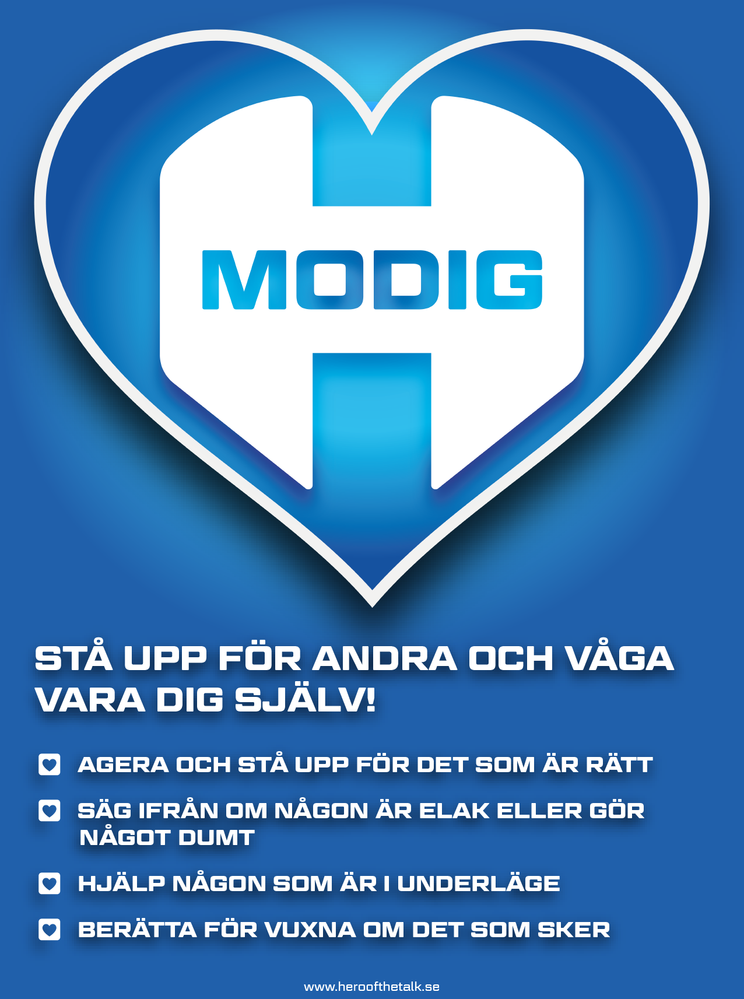
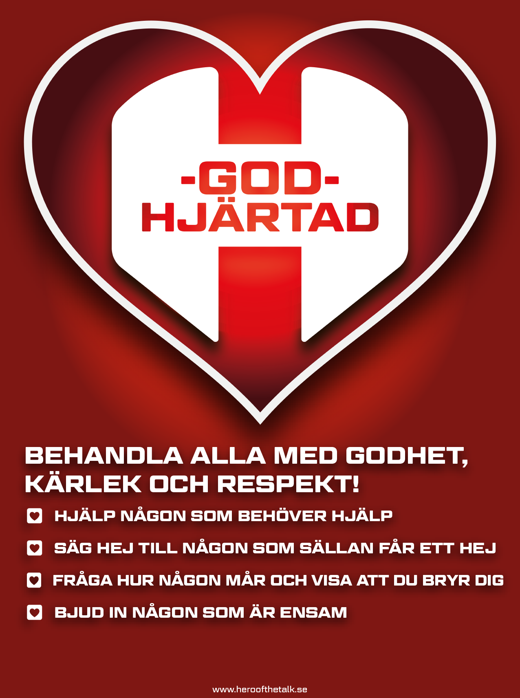
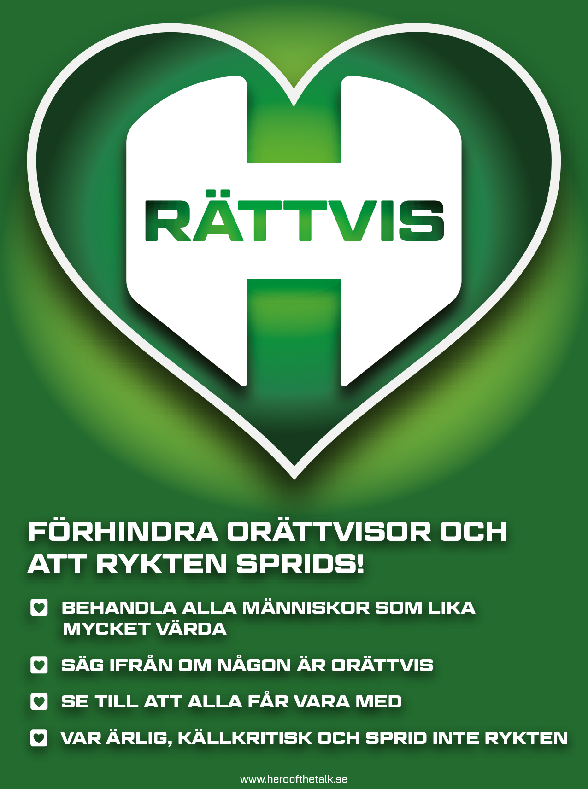

BE THE HERO är ett interaktivt värdegrundsprogram som tränar elever att bygga trygghet, ansvar och civilkurage tillsammans. Anpassat per stadium — i klassrummet, på rasten och på nätet.
Eleverna tränas att se signaler tidigt och våga agera — så att kränkningar förebyggs istället för hanteras.
Skolledning, personal och vårdnadshavare jobbar tillsammans med ett gemensamt språk — så får värdegrunden fäste.
Direkt kopplat till Normer och värden — arbetet mot kränkande behandling och elevernas ansvar för en trygg studiemiljö.
BE THE HERO är inte en quick fix. Vi ger er strukturen, materialet och det gemensamma språket. Ni ger skolans systematiska värdegrundsarbete, kollegiala samverkan och förankringen i just er verksamhet. Det är när dessa två möts — programmet och er implementering — som elevernas utveckling sker på riktigt.
Genom strukturerade övningar, filmer och samtal tränas eleverna inom sex utvecklingsområden — det som forskningen visar är avgörande för trygghet och socialt ansvarstagande i skolan.
Att se och tolka andras perspektiv, känslor och avsikter.
Att leva sig in i hur andra känner och visa medkänsla.
Modet att stå upp för andra — även när det är obekvämt.
Verktyg att lösa konflikter innan de eskalerar.
Att förstå sin roll i gruppen och ta ansvar för den.
Tryggheten att vara sig själv — och stå upp för den.
BE THE HERO bygger på en enkel idé: varje elev har fyra inre superkrafter som kan tränas och stärkas — det är de som gör skillnad i klassrummet, på rasten och i livet.





Korten lägger grunden för det gemensamma språket. De används som uppdrag med escape-room-känsla, hängs upp på klassrumsväggarna och tas fram när sociala situationer behöver hanteras tillsammans.
De 18 HERO-korten i detalj
Hero · Utsatt · Vuxna · Åskådare · Passiv mobbare · Medmobbare · Mobbare
Verbal · Fysisk · Psykisk · Nätbaserad
Uppmärksam · Modig · Godhjärtad · Rättvis
Konflikt · Kränkning · Mobbning
Interaktiva filmer, färdiga lektioner och samtalsövningar ger elever och personal ett gemensamt språk för trygghet, ansvar och civilkurage i skolvardagen.
Tydliga lärarhandledningar, färdiga lektionsupplägg och filmer som pausas vid rätt tillfällen gör programmet lätt att använda. Läraren kan fokusera på samtalen med eleverna.
Anonyma enkäter, skolstatistik och en övningsbank för hela läsåret hjälper skolan att följa elevernas upplevelser och hålla arbetet med trygghet och gemenskap levande över tid.
Varje stadium har sin egen grundutbildning som sätter grunden för värdegrundsarbetet och bygger det gemensamma språket. Anpassade filmer och övningar gör programmet elevnära och engagerande — yngre elever lär sig genom visuella verktyg och klassgemenskap, äldre elever utforskar identitet, sociala medier och komplexare gruppdynamik.
Visuella verktyg, klassaffisch och klistermärken. Ledord och tydliga begrepp bygger en grund att stå på resten av skolgången.
Klassdiskussioner och djupare begrepp. Eleverna börjar koppla sina egna erfarenheter till rollerna och superkrafterna.
Identitet, sociala medier och komplex social dynamik. Eleverna jobbar med verkliga dilemman som speglar tonårens utmaningar.
Här planerar lärare, undervisar och följer upp programmet — med övningsbank, lektionsbyggare, anonyma enkäter och digitala verktyg som engagerar eleverna direkt i klassrummet.
Skapade för varje stadium och körs klassvis. Sätter grunden och ger eleverna kunskaperna att bli en HERO.
Hundratals övningar filtrerade på årskurs, tema och tid. Nya övningar tillkommer kontinuerligt hela läsåret.
Bygg egna lektionspass och årshjul kring olika teman. Dela planeringen med kollegor — bygg värdegrundsarbetet tillsammans.
Anonyma åsiktsfrågor via QR — en pulskoll på elevernas mående och trygghet. Filtrera per årskurs, kön och termin. Följ utvecklingen över tid eller dela med kollegor som underlag för samtal.
Likt Kahoot, fast med pedagogiskt fokus. Poäng, rätt/fel-feedback, förklaringar och statistik per skola och klass.
Färdiga upplägg för temadagar och temaveckor om allvarliga ämnen — som grooming och psykisk ohälsa. Redo att köra i klassen.
Programmet är utvecklat tillsammans med skolpersonal, elever och forskare. Allmänna Arvsfonden har beviljat fyra projektstöd sedan 2019, och en studie tillsammans med Linköpings universitet startar Q3 2026 för att utvärdera programmets effekt över tid.
av eleverna som mobbat säger att de vill ändra sitt beteende efter utbildningen.
av eleverna vill ta större ansvar för att minska kränkningar och mobbning.
av utsatta har aldrig berättat för någon vuxen om vad de upplevt.
Källa: 4 000 elevenkäter från åk 4–9 som genomfört BE THE HERO.
Läs mer om forskningen →Värdegrundsprogrammet anpassat för fritidshemmets mer informella lärandemiljö — så att arbetet med trygghet, ansvar och gemenskap fortsätter även efter skoldagen.
Välj stadier och antal klasser i kalkylatorn — så ser ni exakt vad det kostar för just er skola. Allt finns beskrivet på Bli en HERO-skola.